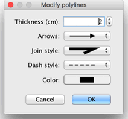

| Editing polylines and curves | |||
You may edit the location of polylines with the mouse, after selecting them in the plan. When one polyline is selected in the plan, you may move any of its points, with the point indicators that appear at each point of the selected polyline.
When the mouse pointer is upon one of these indicators, it changes to indicate you can drag and drop that point to move it.  In the polylines pane, you may change the thickness of the selected polyline, the arrows drawn at its ends, the style of joined lines, its dash style and its color. The last choice of the Join style drop down list allows to draw a curve instead of lines. |

|